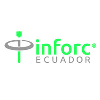
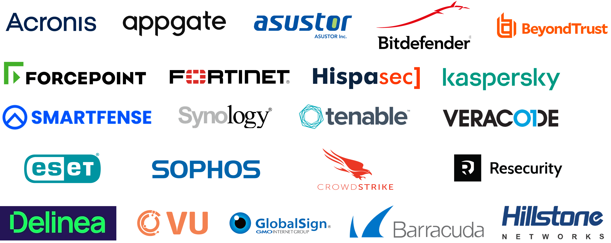

INFORC Ecuador

INFORC Ecuador es una empresa dedicada a la ciberseguridad y
soluciones tecnológicas. Su objetivo es objetivo es ayudar a
prevenir y gestionar el riesgo de nuestros clientes frente a
las amenazas informáticas. Para alcanzar nuestro objetivo,
ofrecemos una gama de soluciones y servicios capaces de
satisfacer las necesidades de nuestros clientes, adaptándose
a sus requerimientos, sus recursos y disponibilidad:
- Proyectos destacados en seguridad informática.
- Colaboración con empresas líderes en el sector.
- Enfoque en innovación y mejora continua.
Marcas Aliadas:

Reflexiones Prácticas Pre Profesionales:
¿Cuáles fueron los objetivos específicos propuestos a alcanzar en mis prácticas profesionales?
Los objetivos específicos propuestos incluían la mejora de la seguridad en la infraestructura de TI, la implementación de soluciones de ciberseguridad y la optimización de procesos mediante la automatización.
¿Cuál fue mi rol durante la ejecución de mis prácticas?
Mi rol fue el de asistente en el departamento de ciberseguridad, colaborando en la identificación de vulnerabilidades y en la implementación de medidas de seguridad.
¿Cómo describo las principales diferencias entre el flujo de trabajo y lo aprendido en la universidad?
En la universidad, el enfoque fue más teórico, mientras que en el entorno laboral se priorizó la aplicación práctica de los conocimientos adquiridos, así como el trabajo en equipo y la resolución de problemas en tiempo real.

.jpg)